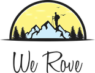

Same idea as your original: a sunrise dome, a hiker on a snowy peak, pine forest, birds, and the script "We Rove". Redrawn with cleaner shapes, steadier outlines, a warmer sun and better balance, and with versions for dark backgrounds and one-colour printing. The script is shown in the font Satisfy as a stand-in; a designer would redraw the lettering to match your original.

The closest to your original. Cleaner peaks with a proper snow line, a warm sunrise with a soft glow, two balanced pine groves, a clearer hiker with a pole and backpack, and birds on the right. On dark backgrounds the outline and lettering turn cream, so it works at night too.
The same badge with one addition: a pair of amber eyes watching from the pines on the right. A quiet nod to the tiger, so the logo says "safari" as well as "trek", without changing what people already recognise.
For stamps, embroidery, jeep stickers, bags and anything printed in a single colour. The sun and sky become clean outlines.